The 10 O'Clock News
2000-2002
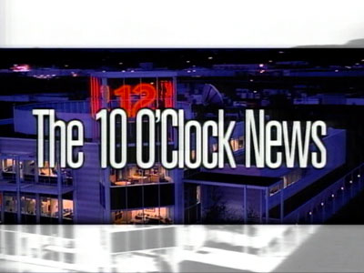
2000:
One
of
many
different
opens
to
the
show
featured
KPTV's
lovely
Willamette
River
office
building.
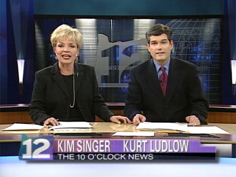
Kim
Singer
is
joined
by
Kurt
Ludlow,
who
took
over
anchor
duties
in
1999.
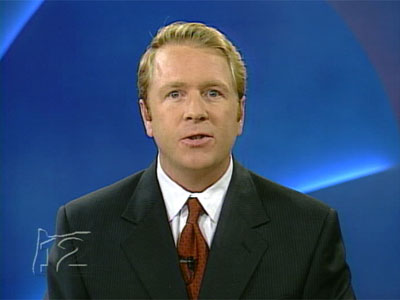
Tim
Becker
continues
as
sports
anchor.
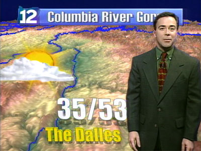
New
computerized
graphics,
which
allowed
the
viewer
to
"fly
over"
the
terrain
arrived,
as
did
weathercaster
Rod
Hill.
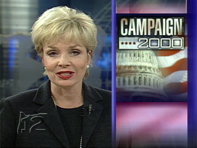
Kim
Singer
with
a
snazzy
"Campaign
2000"
graphic.
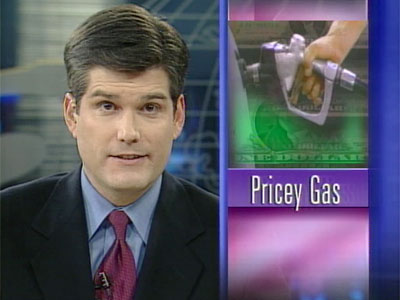
Kurt
Ludlow
reports
on
the
rising
gas
prices.
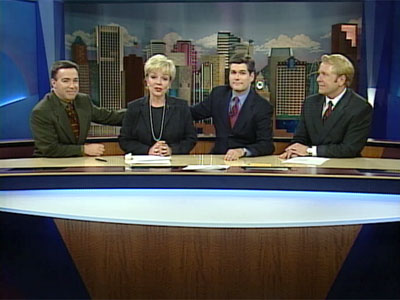
February 29, 2000: After 16 years anchoring The Ten
O'Clock
News, Kim Singer signs off. Kim is given moral support by
Rod Hill, weather; Kurt Ludlow, anchor; and Tim Becker, sports.
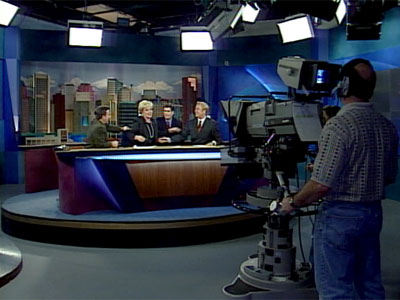
A long shot of the studio on that same evening shows the
news desk on the swivel platform, which could rotate 360
degrees. Cameraman Mark Mack captures Rod Hill, Kim Singer,
Kurt Ludlow and Tim Becker as the show ends.

The 10 O'Clock News opening titles, 2001.
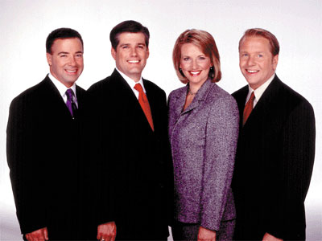
The 10 O'Clock News team, October 2000 to 2002:
Rod Hill (weather), Kurt Ludlow (anchor),
Shauna Parsons (anchor), Tim Becker (sports).
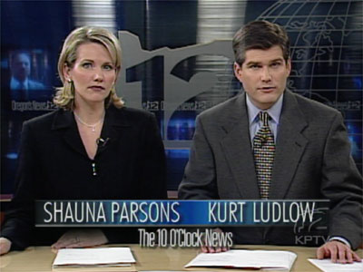
Kurt and Shauna
open the news from studio "A".
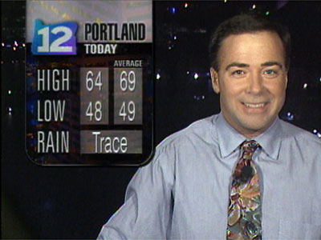
Rod Hill recaps the days weather from the
"weatherdeck," the
third story balcony overlooking the Willamette River at KPTV's
east-bank facility.


This
page
last
updated
on
August 23, 2025